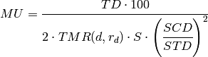
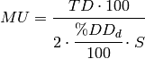
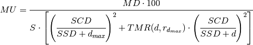

Quality assurance on parallel opposing beam treatments¶
Isocentric treatments¶
For parallel opposing beams the dose to the isocentre ID in Gy is divided equally between the beams giving:
(1)
for each beam.
Variable SSD treatments¶
A similar equation holds for variable SSD treatments:
(2)
where:
- STD is the source treatment distance (STD = SSD + d)
- TD is the tumour dose in Gy
- d is the treatment depth
Fixed SSD treatments¶
For parallel opposing fields the tumour dose TD in Gy is divided equally between the two beams giving:
(3)
Dose at maximum build-up prescriptions¶
For parallel opposing beams the situation is a little more complex. Fortunately the dose at maximum build-up prescription is not normally used for parallel opposing beams. The dose at maximum buildup, Equation 5, from the previous section must be modified to take into account the contribution from the opposing beam giving:
(4)
where d = patient diameter - dmax. It is recommend that this equation be used for isocentric, variable SSD and fixed SSD treatments.
For the sake of simplicity no tray, table or compensator factors have been included in the equations given above. When a factor is used, divide through by the appropriate factor.